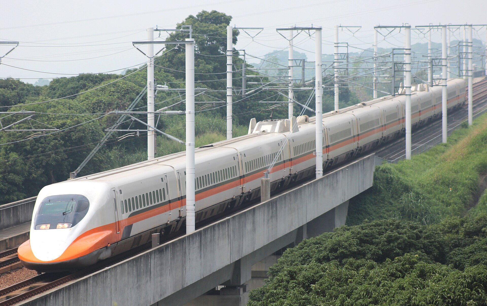

高鐵進隧道，耳朵感到的不是只有海拔
一列車會產生先跑到前方的壓力波，隧道、車廂與耳咽管再各自決定，變化有多快傳到鼓膜兩側。
車窗突然變黑，耳朵像被輕輕壓住，吞一下口水又鬆開。若把它當成爬山時的耳悶，會有一個疑問：高鐵沒有在幾秒內爬升幾百公尺，為什麼壓力仍會改變？因為隧道裡多了一列高速移動、排開空氣的車。它引起的壓力變化，會在隧道中先行傳播、反射，再透過車廂的密封與通風系統影響乘客。最後，耳咽管能否及時平衡，才決定同一節車廂裡誰幾乎無感，誰覺得難受。

一、車還沒到，壓力波已先過去了
開放空間裡，列車排開的空氣可以往較多方向流動；進入隧道時，可通過的空間受到限制，車頭推擠形成壓縮波，沿隧道以接近音速前進。車尾進入時又有另一種變化。壓力波不是整列車前方空氣都以音速搬家，而是擾動在傳播。
台灣高鐵人員 2011 年發表的現地研究，在林口及八卦山隧道佈設動態氣壓計與光電開關，同時記錄壓力、車速及車頭車尾的位置[6]。在林口案例中，壓縮波先經過測點，列車約三十七秒後才到。用距離與時間反推的波速接近當時氣溫下的音速，這是把波和車分開量到的證據。
所以，耳悶不必恰好在車頭跨過洞口那一刻才發生。列車造成的波、列車本身經過，以及洞口反射回來的波，是不同時序；把整個過程說成「一進洞空氣就被擠一下」，只保留了開頭。
二、隧道裡不是只有一次升壓
同一份台灣研究辨認出波在兩個洞口之間來回反射，並逐漸衰減；開口邊界反射時，壓縮與膨脹的波形也可能互換。列車本體經過測點時，周圍拖曳氣流又帶來局部壓降。實測曲線因此有多次正負起伏，不是一條爬高後維持不變的線。
研究選的林口隧道長 6,482 公尺、斷面 74 平方公尺；八卦山隧道長 7,364 公尺、斷面 90 平方公尺。比較顯示，車速與列車對隧道斷面的阻塞比，都是壓力強度的重要條件。隧道長短則影響波反射與列車遭遇的時間關係，不能單憑「比較長」就斷言耳壓一定更大。
作者在測試條件內得到，洞內正壓峰值大致隨車速的 2.1 至 2.2 次方增加。這是那些隧道、車輛及量測條件下的關係，不是車內乘客鼓膜壓差，也不是所有洞口外噪音的通用公式。把量到的是哪裡、哪一種峰值交代清楚，數字才有意義。
三、外面變得快，裡面能不能變得慢？
乘客待在車內，不是直接坐在隧道測點上。車體密封程度與通風系統，會影響外部壓力如何傳入客室。因此洞內測到的峰值，不能直接當作客室內每個座位承受的變化。
日本鐵道綜合技術研究所 1997 年的論文摘要，討論密封技術及耳部不適，並針對非氣密車輛提出暫行評估指標：任意四秒內的壓力變化不超過 2.0 kPa[1]。這顯示工程關心的不只有最大壓力，也包括它在多短時間改變。它不是台灣 700T 的現行合格門檻，更不是每個人都不會不舒服的醫學保證。
較容易理解的比喻是緩衝：外面發生一次快速起伏，內部如果能拉長變化時間，就給耳朵較多調整機會。這只解釋設計方向，不能據此宣稱所有高鐵車型都裝了同一種自動氣壓裝置；判斷特定車型，還需要它自己的設備資料。
四、最後一段緩衝，在耳咽管
英國 Rotherham NHS 的病人資料說明，耳咽管連接中耳與鼻後方，平常關閉，吞嚥、打呵欠或咀嚼時會開啟，使鼓膜兩側壓力較容易平衡[5]。這解釋為什麼有些人吞一下，就有「啵」的一聲鬆開。
若感冒、過敏或其他原因使它腫脹、阻塞，平衡就可能不順利。同一份資料列出耳塞感、聽覺悶住、疼痛、耳鳴等表現。因此「同車的人都沒事」不能用來否定一個人的症狀，車廂壓力變化只是共同外在條件，人體調節並不完全相同。
這篇文章不是耳科診斷或個別治療指令。吞嚥可幫助理解生理機制，但持續疼痛、聽力改變或其他明顯症狀，應由醫療人員評估，不能因為剛搭完高鐵，就一律當作短暫耳壓問題。
五、洞口的「砰」，和耳內的悶，不是同一個量
鐵道總研對隧道微氣壓波的說明是：壓縮波跑到另一端出口，向外輻射脈衝狀壓力波，可能在洞口附近形成爆破般聲音，或讓房屋門窗震動[4]。這是沿線環境問題；客室耳壓是車內壓力與身體平衡的問題。兩者有共同的起點，卻不宜互當測量替身。
台灣研究另外在洞外放置較高解析度的感測器，正是為了分開觀察微氣壓波。研究也描述兩座測試隧道洞口有約二十公尺的擴大加蓋結構，斷面放大，並有開口，用於減壓與緩和洞口效應。這是具體設施案例，不代表每座台灣高鐵隧道尺寸相同。
鐵道總研列出的措施還包括車頭形狀最佳化、入口緩衝工及支坑利用。它們嘗試改變波如何產生、傳播或釋放；車廂密封與通風則在另一道邊界保護乘客。只做其中一層，不能宣稱其餘問題也一起消失。
六、一趟幾秒的不適，跨過三種時間尺度
列車的移動、壓力波的傳播、耳咽管的平衡，各有自己的速度。工程要處理的是它們碰在一起時的結果：某個波何時追上車、車內多久跟著改變、人體是否來得及調整。這也讓「車速不超過音速，為什麼還有壓力波」不再矛盾：形成可傳播的壓力擾動，不要求車本身超音速。
下次車窗變黑，不必把每次耳悶都歸給海拔，也不必從個人感覺反推整座隧道的壓力數字。更準確的描述是，一個外部擾動先經過土木與車輛設計的緩衝，最後才由身體完成平衡。越能分開這幾層，越知道一種改善究竟改善了哪裡。
查證資料來源6 項
實際支持文中事實主張的來源，逐條標註支持的內容；文內如有 [數字] 標記，對應此處編號。
- Pressure Change in Tunnel and Complaints of Aural Discomfort by Railway Passengers（RTRI Quarterly Review Vol.38 No.3，1997，日本鐵道綜合技術研究所） ↗
- 高鐵車輛發展趨勢（張有恆、蘇昭旭，科技大觀園，國科會） ↗
- Field study on the interior pressure variations in high-speed trains passing through tunnels of different lengths（Journal of Wind Engineering and Industrial Aerodynamics Vol.169，2017，Liu 等） ↗
- トンネル微気圧波低減対策（鉄道総合技術研究所 RTRI 研究開發頁） ↗
- Advice and treatment for Eustachian tube dysfunction（Rotherham NHS） ↗
- 台灣高速鐵路隧道空氣動力效應之量測（王心慈、蔡培峻、朱登子，隧道建設，2011）
延伸探討
把故事帶回自己的思考
如果要比較兩種列車的乘坐舒適度，你會只比較隧道外部壓力峰值，還是同時量客室壓力變化速率與乘客反應？為什麼一個低峰值，仍可能不是完整答案？